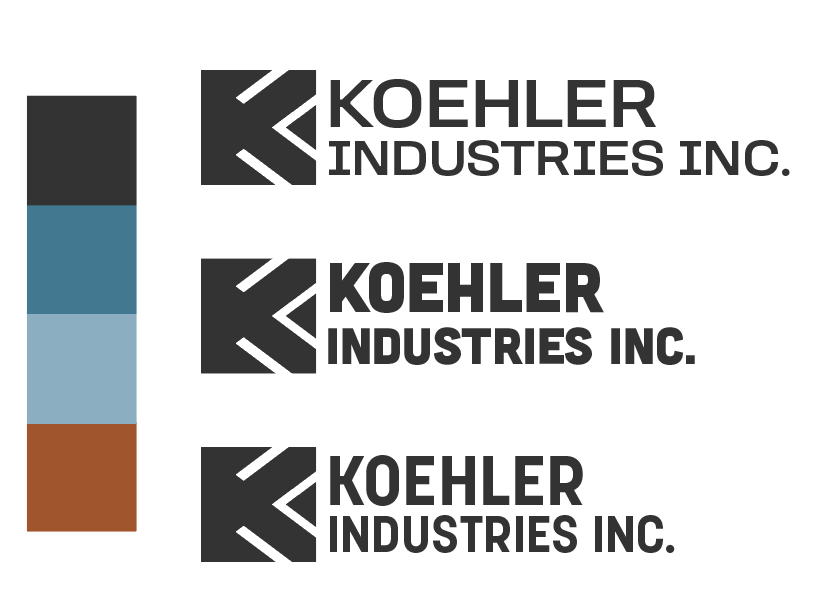
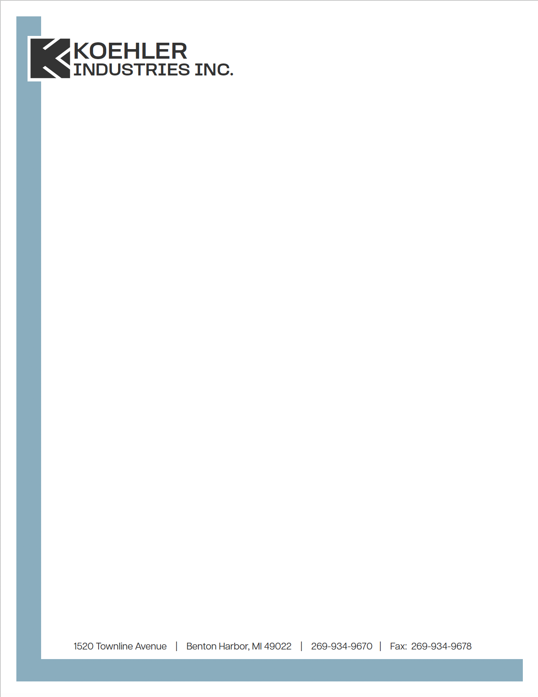

Grace Jermstad
Koehler Industries Rebrand
A freelance rebranding project, delivering a fresh brand identity, a redesigned logo, and customized stationery while effectively negotiating and meeting the agreed-upon timeline and accommodating the specific requirements of the client.
Koehler Industries is a small machinery company that was bought by new owners. After the new ownership, they decided to rebrand the entire company.
RESEARCH
In speaking to the new owner, I learned what Koehler does, what Tool & Die really is, and what they were looking for in their new branding.


IDEATIONS
I was inspired by the colors inside of the shop, inorganic shapes, strong materials, and the industrial environment.
Final Logo and Stationery
